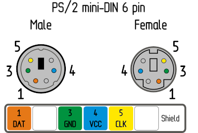

Raspberry Pi Pico HID¶
The Pico HID is a part of DIY PiKVM V1 platform that performs keyboard and mouse emulation. It has excellent compatibility, and emulates USB by default, including two mouse modes: absolute and relative.
Full list of features:
| Feature | Enabled by default |
|---|---|
| USB Keyboard, absolute & relative mouse | Yes |
| USB Absolute Mouse for Windows 95 | No |
| PS/2 Keyboard & mouse | No |
The scope of the Pico HID is not limited to V1 platform, it can also be used with V2 and even V3 platform, if you need to emulate a PS/2 keyboard and mouse or use a legacy multiport KVM switch which does not fully support USB standards.
This page explains how to build, connect and use all the features of the Pico HID.
Software requirements
KVMD >= 3.241 is required for the Pico HID. For new builds, this will be the case, but if you want to use the Pico HID on the old PiKVM, you will need to update OS.
Making the Pico HID¶
If you are building the PiKVM V1, then all the necessary components should already be at your fingertips. If you are making the Pico HID for V2 or V3, then here is all that you will need:
- x1 Raspberry Pi Pico board with soldered pins.
- x1 USB-A to Micro-USB cable.
- x10 dupont wires female-female.
- x1 1N5819 diode. It's optional but strongly recommended. Any similar one will do.
Tip for soldering gurus
If you know how to solder, you can buy the Pico without pins and just solder everything without needig the dupond wires.
Warning
The diode is needed to provide power to the Pico HID regardless of the host state, which prevents the backpowering problem. It will allow you to keep the keyboard buttons pressed during the host power cycle, which is, for example, important for MacOS to get into the boot menu.
Do not connect the red wire (the VSYS (Pico) -> 5V (Pi) line) without a diode.
If you can't find a diode, don't connect this wire at all.
Connect all the parts according to this scheme:
Simple wiring diagram
Electrical schematic diagram for advanced users

PS/2 Keyboard & Mouse¶
Additional steps for PS/2 support
If you need PS/2 keyboard and mouse support, you will need a few additional components. Soldering skills will also come in handy.
- x1 3.3V/5V bi-directional logic level shifter like this.
- Optional: x2 PS/2 cable with male connector (can be salvaged from the an keyboard or mouse).
Make sure that the level shifter pinout matches the scheme, and connect everything according to the Pico pinout.
_________________
| |
Pico GP11 ______| LV1 HV1 |______ PS/2 keyboard data
Pico GP12 ______| LV2 HV2 |______ PS/2 keyboard clock
Pico GP13 ______| LV HV |______ PS/2 5V
Pico GND ______| GND GND |______ PS/2 GND
Pico GP14 ______| LV3 HV3 |______ PS/2 mouse data
Pico GP15 ______| LV4 HV4 |______ PS/2 mouse clock
|_________________|
You can take the 5V power line from one of the PS/2, for example from the keyboard, or from both at once, but use a multimeter to make sure that both PS/2 female connectors have the same line.

PS/2 female socket pinout on the motherboard is the same for the keyboard and the mouse. A purple socket usually corresponds to the keyboard, and a green one to the mouse. If your motherboard only has one port, it's probably universal and can be used for both the keyboard and the mouse. Most likely, it will be painted both colors.
Use a multimeter to determine the purpose of the wires in your PS/2 cables.
A good idea is to mount the level shifter on top of the Pico, as in this photo:
Note
Don't forget to enable PS/2 mode support as described in the next paragraph
Configuring the HID modes¶
By default, Pico HID emulates a USB keyboard and an absolute or relative mouse (read here about the difference between mouse modes). For most cases, nothing needs to be changed here. However, if you need something special (like Windows 98 support), you can do it without reflashing the current firmware.
To achieve this, the Pico HID uses a runtime configuration, which is set by connecting
some GPIOs with Ground (GND) lines.
| Pin name on the Pico board | Description |
|---|---|
GP2 |
Enable PS/2 keyboard & mouse support (see below). |
GP3 |
Prefer the PS/2 keyboard over USB when turning on the HID (if PS/2 is enabled). |
GP4 |
Prefer the PS/2 mouse over USB (if PS/2 is enabled) |
GP6 |
Disable USB keyboard & mouse support. This is useful if you only want to use PS/2. |
GP7 |
Enable the special USB absolute mouse for Windows 98. |
GP8 |
Prefer the relative USB mouse over the absolute one. |
GP9 |
Prefer the Windows 98 USB absolute mouse over the regular absolute one (if enabled). |
Example
To enable Windows 98 absolute mouse, just connect pin GP9 to any GND on the Pico.
Flashing the firmware¶
To upload the firmware to Pico HID, you can use any computer with a USB port.
- Download the latest release of the firmware. The file is called
pico-hid.uf2. - Press and hold the white button on the Pico board.
- While still holding the button, plug it in the computer using a USB cable.
- Release the button.
- The Pico board appears as a flash drive on the host computer.
- Copy the
pico-hid.uf2file to this flash drive. - Safely eject the USB device.
The final steps¶
Connect the Pico HID to the host computer using the USB cable.
If you are building PiKVM V1, no further action with the Pico HID is required.
If you are making the Pico HID for V2 or V3, add the following lines to the PiKVM configuration and reboot it:
-
/boot/config.txtdtoverlay=spi0-1cs -
/etc/kvmd/override.yaml:kvmd: hid: type: spi chip: 0 bus: 0 sw_cs_pin: 7 sw_cs_per_byte: true reset_pin: 25 reset_inverted: true reset_self: true power_detect_pin: 16 power_detect_pull_down: true
Replacing the Arduino HID¶
Warning
This section is intended for advanced users of the legacy Arduino HID.
It may seem tempting, but don't to use the Arduino HID for new PiKVM builds just because you have it at your fingertips. Connecting and flashing Arduino is much more time consuming than Pico. In addition, different Arduino board work with different voltages, they may or may not have SPI (for the Pico, we use SPI to free up the UART on Raspberry Pi for the console and other useful things), etc.
Using the Pico HID is the recommended fast and standard way in the PiKVM world.
The Pico HID can be used to replace the legacy Arduino HID. It can use both Serial (UART) port and the SPI. The connection scheme is also much simpler, getting rid of the transistor for the Reset line and the level shifter for RX/TX (MOSI/MISO).
For the Arduino HID over SPI
Throw away the Reset transistor and level shifter, and follow this guide from the very beginning, as if you were connecting Pico HID to PiKVM V2 or V3.
For the classic Serial (UART) HID
Get rid of the transistor and level shifter, and follow this guide from the very beginning, but the schemes and configs will be slightly different.
-
The
GP22on the Pico is connected directly to theGND. This enables UART mode instead of the default SPI. -
In the good old PiKVM V0,
GPIO4on the Raspberry Pi was used for the Reset line. Now we recommend to useGPIO25for consistency reasons. However, you can useGPIO4by changing thereset_pinvalue in the config example below. On the scheme, this is a yellow wire, theRUN (Pico) -> GPIO25 (Pi)line.
Simple wiring diagram

Electrical schematic diagram
Configs
-
Don't add line
dtoverlay=spi0-1csto the/boot/config.txtfile. It's only needed for SPI. -
/etc/kvmd/override.yaml:kvmd: hid: type: serial device: /dev/kvmd-hid reset_pin: 25 reset_inverted: true reset_self: true power_detect_pin: 16 power_detect_pull_down: true